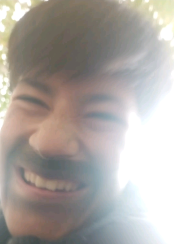
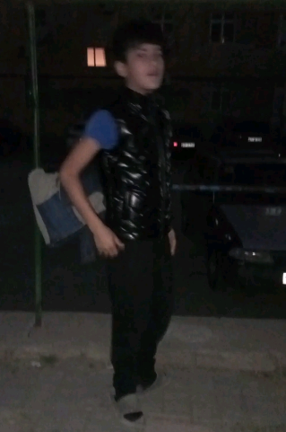
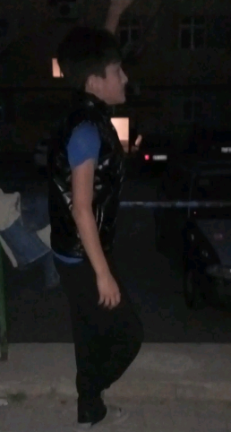
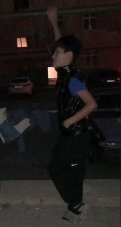

Bir insan. Öz yolu.
Salam,
mən Valeh.
Sakit görünüşümün arxasında böyük xəyallar, maraq və hər gün bir az da irəli getmək həvəsi var.
Məni tanıÖzün olmaq — ən gözəl başlanğıcdır.

Fərqli olmaq
üçün səbəb axtarmıram.
Mən Valehəm. Arıq bədən quruluşum, sakit danışığım və hər şeyi diqqətlə müşahidə etməyim məni mən edən xırda detallardandır. Görünüşümün arxasında isə özünə güvənən, məqsədləri olan bir insan var.
Bu səhifə mənim haqqımdadır — sevdiyim şeylər, kiçik addımlarım və hələ qarşıda olan böyük planlarım. Hər kəsin hekayəsi özünəməxsus başlayır. Mənimki də elə.
Kamera açıqdır,
ciddilik bağlı.
Rəqsə görə məsuliyyəti DJ, ritmə görə məsuliyyəti ayaqqabılar daşıyır. Biz sadəcə çəkilişə vaxtında gəlmişik.

Günəş də flaşı yandırdı.
Fotoqraf: “Flaş yandırım?” Günəş: “Kənara çəkil, növbə məndədir.”

Musiqi yoxdu, mən hazıram.
DJ hələ Bluetooth-u qoşur, rəqs isə artıq ikinci kupletə keçib.

Qolu qaldır, şəbəkə tutur.
Bir xətt internet tapdıq. İndi story-ni yükləmək üçün tərpənməmək lazımdır.

Final poza: alqışları montaj elə.
Rejissor “kəs” deməyib, amma biz finalı özümüz elan etdik.
DAVAMI GƏLƏCƏK